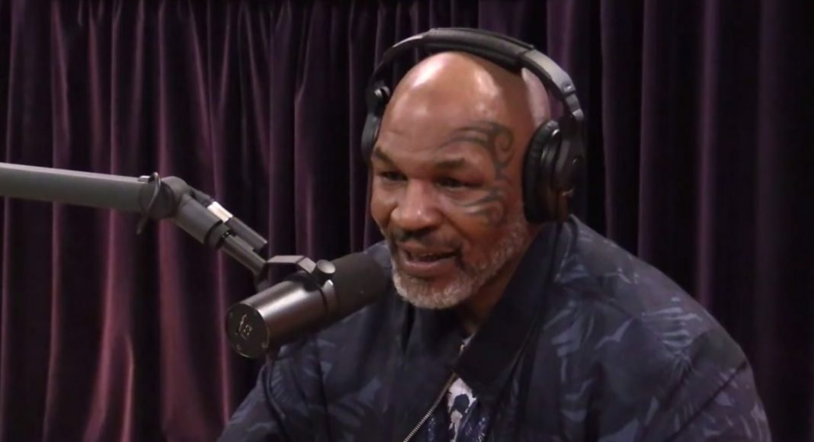
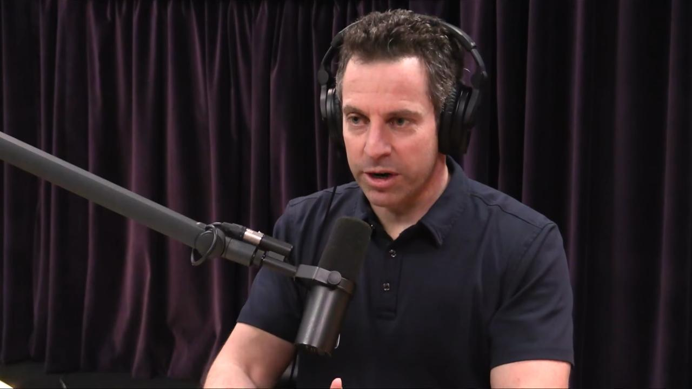

| Elon Musk | Elon loves tunnels and batteries. | |
| Matthew Walker | Matthew Walker wrote the popular Why We Sleep: Unlocking the Power of Sleep and Dreams, and in this episode from 2018 he goes in depth into the topics explored in the book, especially things like why we oversleep and the impact of drugs on sleep. Whether or not you have read the bestseller, you can enjoy this look into it and will definitely learn more about sleep than you ever knew there was to learn. | |
 |
Mike Tyson | Former heavyweight boxing champion and forever controversial figure Mike Tyson has had a long, interesting career that included biting a competitors ear off and owning three pet tigers. |
| Neil DeGrasse Tyson | Is that a bird? Is that a plane? No it's the Sun. Astronomy! | |
 |
Sam Harris | Harris and Rogan run in the same circles, and this three-hour discussion included topics ranging from mindfulness and spirituality to the ethics of violence. |
| Edward Snowden | Revealed that there are no Aliens in area 51 |